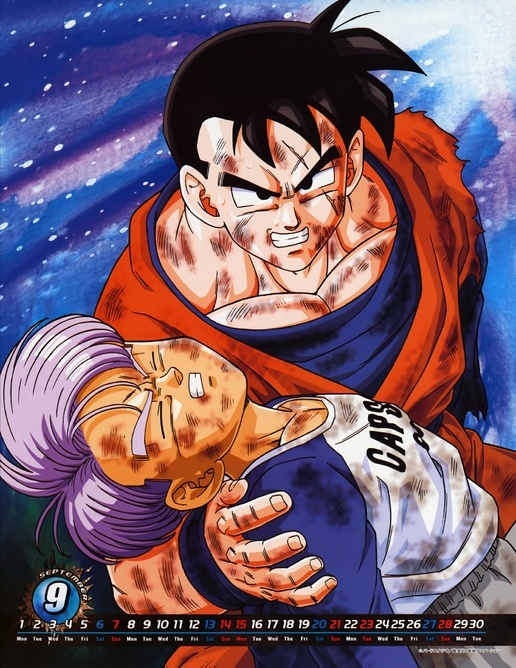
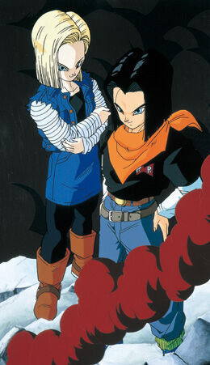

el origen temporal
En el caso de la máquina del tiempo, creada por Bulma del Futuro Alternativo para viajar atrás en el tiempo, la máquina del tiempo crea una nueva línea de tiempo que se desvía de su original en el momento en el tiempo en que llegaron. los echos en db y inicios de z y saga de freezer todo ocurre en todas las lineas exactamente antes de la llegada de freezer y king cold en el año 764, freezer y king cold llegan a la tierra para vengarze de goku, los guerreros z trataron de detenerlo pero era en vano goku sintio el ki de sus amigos debilitandose se teletransporto por que no sabia si el llegaria a tiempo asi llegando con la trasmision instantanea derrota a freezer y a king cold con facilidad explicandole a todos su nueva tecnica. esto seria la batalla original donde no intervino nadie por que aun no se viajaba en el tiempo esto sucedieron en as lineas de tiempo donde proviene trunks y en la linea original el futuro de cell.


lineas del pasado alteradas
los echos en db y inicios de z y saga de freezer todo ocurre en todas las lineas exactamente antes de la llegada de freezer y king cold en el año 764, freezer y king cold llegan a la tierra para vengarze de goku, freezer y su padre mandan a los soldados pero son derrotados por un joven misterioso que viene del futuro llamado trunks freezer es primerto en hacerle frente pero es cortado y exterminado por trunks los guerreros z desconocian el poder de trunks creyendo que era goku.

tras derrotar a freezer cold queda sorprendido tratando de negociar con trunks del futuro cual el joven rechaza la oferta y cold es exterminado rapidamente por trunks asi salvando a todos pasando 3 horas asi llegando goku y explicandole a el el peligro que se avecina y dandole la medicina a goku. desde ese punto de la historia ocurrieron los cambios tras trunks derrotar a freezer y king cold.

el mundo apocaliptico
el Trunks del futuro, y que provoca su mayor popularidad (de nuevo, también en comparación con su versión del presente) es la historia que lleva detrás, mucho más dramática. Este Trunks viene de un mundo desolado y distópico, con unos androides muy poderosos y sádicos, que al haber matado a todos los Guerreros Z (incluyendo Piccolo) ya no encuentran rival. La única esperanza que queda en este universo es Trunks (lo que provoca que el personaje además tenga un componente mesiánico), que ha sabido esconderse de los androides gracias en buena parte a su madre, Bulma (también con vida), y a su mentor, Gohan (asesinado al final por los androides, protagonizando uno de los momentos más dramáticos de la serie). Volviendo a las referencias con Terminator, al público le gustan los mundos distópicos, probablemente por las posibilidades que ofrecen, casi todas ellas cargadas de angustia y dramatismo. Es una forma imaginaria y ociosa de ver hasta qué punto puede aguantar el ser humano, como sociedad y como individuo. Ya lo demuestran Terminator, Mad Max, Blade Runner, Interstellar, Los juegos del hambre, y un largo etcétera. En ese sentido, Trunks del futuro ha demostrado ser el personaje con mayor resiliencia de todo Dragon Ball: ha sobrevivido desde bebé, y sin conocer a su padre ni a ninguno de sus camaradas, en medio de caos y destrucción, plantándoles cara aún a los androides (y al final saliendo victorioso). Y todavía tiene tiempo de ser educado y agradecido como Gohan.

los androides 17 y 18 asesinos
dos individuos aparecieron causando gran caos,estos eran un par de androides 17 y 18 que habían eliminado a su creador para que este no pueda apagarlos nunca,estos androides disfrutaban de asesinar y destruir,los guerreros Z se les enfrentaron para detener su camino de destrucción,pero nunca pudieron hacerlo...cuando intentaron detenerlos,uno por uno fueron asesinados,el primero en caer fue Vegeta,quien mientras peleaba contra Androide número 17,este fue asesinado ante el,tras su muerte,los guerreros Z cayeron hasta reducirse a solamente dos,Gohan y Trunks,quien sobrevivieron en un mundo que se sumía en la ruina gracias a los androides,ninguno de los dos era tan fuerte para detenerlos,y así Gohan comenzó a entrenar a Trunks con la esperanza de que derrote a los androides,pero un día,Gohan se les enfrentó,y lucho dignamente hasta el final,pero al terminar,fue una nueva víctima de los androides..

la muerte de los guerreros z
-Tras la muerte de Goku,Gohan y compañía eran los defensores de la tierra,cuando los androides atacaron,podríamos decir que Vegeta era el más capaz para enfrentarlos,al morir,pienso que todo se tornó mas gris,ya que las esperanzas comenzaban a reducirse,tras la muerte de Picoro,los guerreros siguieron enfrentándose ante los androides,pero me imagino la escasa esperanza que tenían en esos momentos,Krilin fue asesinado,luego Yamcha,Ten,hasta Yajirobe,todos lucharon dignamente hasta el final,defendiendo el planeta,y luchando por la vida y la paz,al morir Gohan,dejó el manto de defensor de la tierra a Trunks,quien peleó con todas sus fuerzas,pero no fue suficiente,y era hora de jugar la última carta...un viaje en el tiempo.